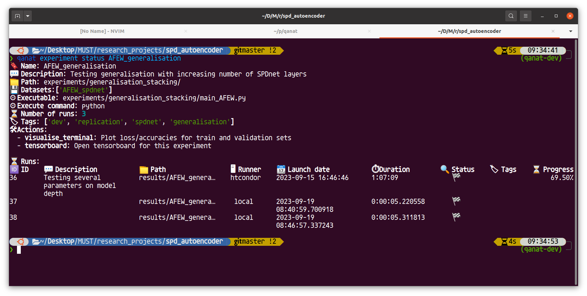
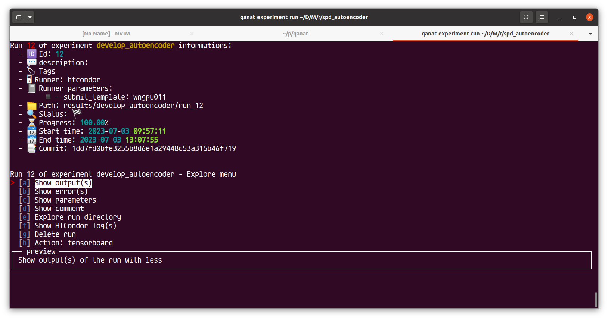

Exploring runs of experiments¶
The qanat experiment status command¶
This commands allows to have a list of the runs that have been done for an experiment. For example:
A flag --live can be appended to the command to see a refreshing status of the runs. This is useful when you are running a lot of experiments and want to see the status of the runs.
The run_explore command¶
Warning
This functionality only work on linux and maxcosx machines since it use sime-term-menu that is not available on windows. One workaround is to use WSL2 on windows.
After an experiment has ben executed, possibly many times with different parameters or by improving the code, it is time to explore the results. This is done with the run_explore command. This will lanch a prompt:
qanat experiment run_explore <experiment_name>
Experiment <experiment_name> has XX runs.
How do you want to explore the runs?
> Search
Menu
where <experiment_name> is the name of the experiment you want to explore and XX should be the number of runs of this experiments. You can then choose to search for a specific run or to explore the runs with a menu by either selecting or searching.
Alternatively you can run the command:
qanat experiment run_explore <experiment_name> <run_id>
to directly jump to a run that you want to see.
Exploring a specific run¶
Once that you have selected a run_id for your experiment (either by the menu or by specifying in the command), you have access to the following menu:
where you have access to the following options:
Show output(s): show the standard ouput(s) of the run with the
lesscommand (see mean page). If several groups had been executed, you can iterate over all those outputs thanks to the:ncommand in the less.Show error(s): show the standard error(s) of the runs with less same as outputs.
Show parameters: show the parameters of the run.
Show comment: show the comment of the run. This is markdown file that is used to keep some information about the run (analysis, contecxt, etc). If it doesn’t exist, you will be asked if you want to create it.
Explore run directory: Will show a tree of the run directory. This is useful to see what has been saved during the run.
Show HTCondor log(s): show the HTCondor log(s) of the run. This is useful when the run has been executed on a cluster with HTCondor. The option is only availabl when the runner is
htcondor. For Slurm, there is unfortunately no way to see the logs.Delete run: delete the run from the database and from the disk. This is useful when you want to remove a run that you don’t want to keep anymore. This allows delete all the files so be careful.
Action: <action_name>: If some actions have been defined for the experiment, you can run the action from the menu. In the example, an action allowing to launch tensorboard for all the groups had been set up. You can also run the action from the command line with the
qanat experiment action <experiment_name> <action_name> <run_id>command.